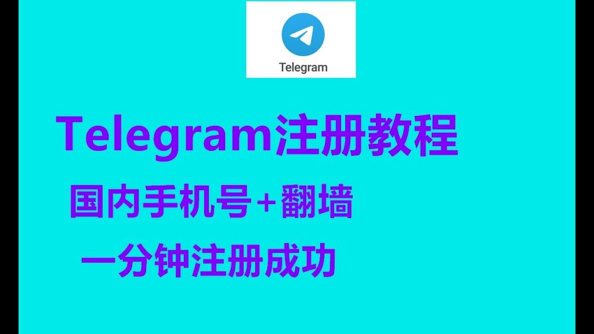

中国手机号注册Telegram安全吗？
使用中国手机号注册Telegram基本上是安全的，因为Telegram提供端到端加密保护消息内容不被外部访问。然而，用户应注意维护自己的隐私设置，避免共享敏感信息，并考虑使用虚拟私人网络（VPN）增加额外的安全层。
Telegram注册基础
如何使用中国手机号注册Telegram
- 下载应用：首先，在您的智能手机的应用商店（如Apple App Store或Google Play）中搜索并下载Telegram应用程序。
- 启动注册：打开Telegram应用后，选择“开始使用”，然后输入您的中国手机号码，系统将提示您确认号码是否正确。
- 验证手机号：输入您的手机号码后，Telegram将发送一个短信验证码到该号码。您需要在应用中输入这个验证码，以验证您的身份并完成注册过程。
注册过程中的安全验证措施
- 验证码验证：Telegram通过发送短信验证码到您提供的手机号码，确保手机号的实际拥有者是尝试注册的用户。这是防止未经授权的账户创建的基本而有效的安全措施。
- 两步验证设置：为了增强账户的安全性，Telegram允许用户设置两步验证（也称为双因素认证）。这意味着在输入密码登录账户之后，用户还需要输入一个额外的密码或在另一设备上生成的验证码。
- 敏感信息保护：Telegram在用户注册和验证过程中使用先进的加密技术，确保所有传输的个人信息和通信数据都不会被外部访问，保护用户的隐私和数据安全。
Telegram的隐私保护功能
端到端加密的工作原理
- 秘密聊天模式：Telegram的端到端加密仅适用于“秘密聊天”模式，在该模式下，消息只能由对话双方访问，即使Telegram服务器也无法解密或存储这些消息。
- 加密密钥独立生成：每次启动秘密聊天时，Telegram都会在用户设备上生成独立的加密密钥，这些密钥不会被存储在服务器上，从而确保信息的安全性。
- 消息自毁功能：秘密聊天支持“自毁计时器”功能，用户可以设置消息在指定时间后自动删除，进一步提高聊天的隐私保护，防止消息长期存储和泄露。
用户隐私设置的优化方法
- 隐藏电话号码：Telegram允许用户在“隐私与安全”设置中选择谁可以看到自己的电话号码，用户可以将其设为仅自己可见，避免被陌生人找到或泄露隐私。
- 控制在线状态：用户可以自定义谁可以看到自己的在线状态（最近上线时间），甚至可以设置特定用户的例外，防止不想被监视的联系人跟踪自己的使用情况。
- 管理账号自动删除：为了防止长期未使用的账户被滥用，Telegram允许用户设置账户在一段时间未使用后自动删除（可选1个月、3个月、6个月或12个月），确保未使用的账户不会成为安全隐患。

使用VPN提高Telegram安全性
选择合适的VPN服务
- 优先选择无日志政策的VPN：使用Telegram时，应选择具有“无日志政策”的VPN服务，这意味着VPN不会记录用户的浏览历史、IP地址或其他个人数据，从而确保最大程度的隐私保护。
- 服务器覆盖范围广：一个好的VPN服务应提供全球多个国家的服务器，用户可以切换不同地区的服务器来绕过网络限制，同时选择低延迟的服务器以提高Telegram的连接速度。
- 高强度加密协议：确保VPN支持AES-256加密、OpenVPN、WireGuard或IKEv2等协议，这些协议能够提供更强的数据安全性，防止第三方窃取或监视用户在Telegram上的通信内容。
VPN使用对Telegram安全性的影响
- 增强隐私保护：VPN通过隐藏用户的真实IP地址，使用户在使用Telegram时不会暴露其真实地理位置，从而有效防止黑客攻击、数据追踪或政府监控。
- 绕过网络限制：在某些地区，Telegram可能受到封锁，VPN可以帮助用户绕过这些网络限制，使其能够自由访问Telegram并保持通信畅通。
- 可能影响连接速度：虽然VPN可以提高安全性，但某些VPN服务可能会降低网速，影响Telegram的消息传输和语音、视频通话的流畅度。因此，选择具有高速服务器的VPN至关重要。

Telegram账户安全管理
双重认证设置方法
- 启用两步验证：打开Telegram的“设置”，进入“隐私与安全”选项，找到“两步验证”功能，点击“设置额外密码”。按照指引创建一个额外的密码，以便在新设备登录时提供额外的身份验证层。
- 绑定恢复邮箱：为了防止忘记额外密码导致账户被锁，Telegram允许用户绑定一个恢复邮箱。在两步验证设置过程中，输入一个有效的电子邮箱地址，并确认以确保可以在需要时找回账户。
- 启用登录提醒：Telegram会在用户登录新设备时发送通知，提醒账户持有人是否为自己操作。如果用户收到未经授权的登录通知，可以立即采取措施，如更改密码或终止所有其他会话。
检测和处理潜在的安全威胁
- 定期检查活动会话：在Telegram的“隐私与安全”选项中，用户可以查看所有当前登录的设备。如果发现陌生设备登录或异常活动，应立即终止该设备的会话，并更改密码以防止账户被盗。
- 警惕钓鱼攻击：黑客可能会通过伪装成Telegram官方人员或使用虚假网站来骗取用户的账户信息。用户应避免点击可疑链接，不要随意向陌生人提供验证码或账户信息。
- 启用自动删除账户：Telegram提供了自动删除账户的功能，用户可以设置一个时间期限（如1个月、3个月或6个月），如果在此期间未使用账户，Telegram将自动删除数据，从而减少账户被滥用的风险。
比较Telegram与其他通讯软件
加密技术的对比分析
- Telegram的加密模式：Telegram提供服务器到客户端加密，普通聊天内容存储在加密的云服务器上。此外，用户可以选择“秘密聊天”模式，该模式使用端到端加密，确保只有聊天双方可以访问消息内容。
- WhatsApp的加密方式：WhatsApp默认启用端到端加密，所有消息、通话和媒体文件都受到保护，即使WhatsApp自身也无法访问用户的聊天内容。不过，WhatsApp备份存储在云端时，若未加密，则可能存在数据泄露风险。
- Signal的安全性：Signal采用端到端加密作为唯一加密方式，所有消息、通话和附件默认加密，且不会存储在服务器上。此外，Signal不会收集任何用户数据，因此是目前隐私保护最严格的通讯工具之一。
用户数据处理政策的差异
- Telegram的数据存储政策：Telegram的普通聊天数据存储在其云服务器上，用户可以随时访问。虽然数据是加密的，但理论上Telegram可以解密这些信息。秘密聊天模式下，消息不会存储在云端，仅保留在用户设备上。
- WhatsApp的数据共享问题：WhatsApp虽然提供端到端加密，但其母公司Meta（Facebook）会收集用户的元数据，如设备信息、IP地址、联系人列表等，并可能用于广告投放或商业用途。这一政策曾引起全球用户的隐私担忧。
- Signal的数据保护策略：Signal不存储用户的任何聊天记录或元数据，不会共享用户信息，甚至服务器也无法得知用户与谁在通信。其去中心化的加密架构让用户享有最高级别的隐私保护。
使用中国手机号注册Telegram是否会泄露个人信息？
Telegram本身不会泄露用户信息，但使用中国手机号注册可能增加被追踪的风险。建议注册后立即调整隐私设置，例如隐藏电话号码，仅允许特定联系人查看。
如何提高使用中国手机号注册Telegram的安全性？
用户可以启用两步验证，使用强密码，并定期检查活跃设备。此外，使用VPN或云手机号注册可以减少被关联的风险，提高账号安全性。
中国手机号注册的Telegram账号会被封禁吗？
目前使用中国手机号注册Telegram仍然可行，但可能会受到特定网络环境的影响。建议定期检查账号状态，并绑定其他联系方式以备不时之需。
其他新闻

Telegram可以删除对方聊天记录吗？
在Telegram中，用户可以删除自己发送的消息，但无法删除对方的聊天记录。在个人聊天中，用户不仅可以删除自己 […]
2024 年 12 月 08 日
Telegram怎么加贴纸？
打开Telegram，进入任意聊天界面。点击表情符号旁的贴纸图标。在贴纸面板下方点击“+”按钮。浏览贴纸库或点 […]
2024 年 10 月 12 日

Telegram怎么看已下载？
在Telegram中查看已下载的文件，可以进入“设置” > “数据与存储” > “存储使用情况”， […]
2024 年 10 月 02 日
Telegram被封号怎么办？
如果Telegram账号被封，首先检查是否违反了平台的使用条款，如发送垃圾信息或传播非法内容。可以通过提交申诉 […]
2024 年 11 月 04 日